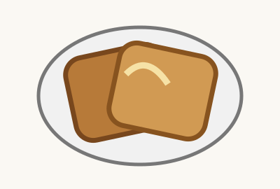

Daphnie Jones - Breakfast Recipes
French Toast

Ingredients
- 4 slices of bread
- 2 eggs
- 1/2 cup milk
- 1 teaspoon cinnamon
- 1 teaspoon vanilla extract
- Butter for the pan
Instructions
- Whisk eggs, milk, cinnamon, and vanilla in a bowl.
- Dip each slice of bread into the mixture.
- Cook in a buttered pan until golden on both sides.
- Serve with syrup or fruit.